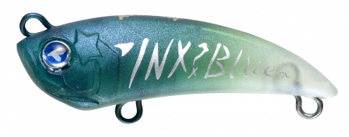
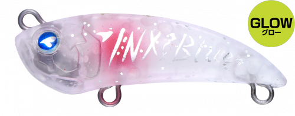
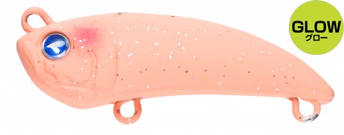
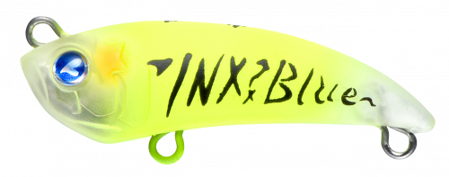

アミコン40S
（AMICON 40S）
アミコン40SはBlueBlue（ブルーブルー）のマイクロワインドプラグです。
インクスレーベル×ブルーブルーのコラボ第2弾で、加来匠さんが完全監修したモデル。ワインドワームのようなキレのあるダートアクションをプラグで再現し、アクション後にはプラグならではのフワッとした浮遊感で食わせの間を作ります。

画像出典:BlueBlue公式HP
スペック
- メーカー
- BlueBlue（ブルーブルー）
- タイプ
- マイクロワインドプラグ（シンキング）
- 全長
- 40mm
- 自重
- 3g
- フック
- フロント#14／リア#16
- リング
- #00
- ターゲット
- アジ・メバル・カサゴほかライトゲーム
- 価格
- 1,300円（税別）
▼今すぐチェック
アミコン40Sの特徴
ワインドのダートとプラグの浮遊感で、アジ・メバルを魅了する
-
キレのあるワインドダート
ワインドワームのようなキレのあるダートアクションを、プラグで完全再現。ワームをセットする手間なく、ワインドの釣りを楽しめます。
-
アクション後の浮遊感
ダートした後は、プラグでしか出せないフワッとした浮遊感。この間に食わせのチャンスが生まれます。
-
トレブルフック2本でフッキングが良い
トレブルフックを2本搭載。リアクションバイトもしっかり絡め取ります。
アミコン40Sの使い方
基本はトゥイッチでのダート。狙いのレンジまで沈めたら、ロッドを小刻みにチョンチョンと動かして左右にダートさせ、止めて浮遊させる間にバイトを待ちます。
反応が渋いときは、ダートの回数を減らしてステイの時間を長めにしましょう。
アミコン40Sの得意な状況
常夜灯まわりの漁港や堤防でのアジング・メバリング。ワームの釣りで反応が薄いときや、ワインドでリアクションバイトを狙いたいときに向いています。
ワンポイント
深場や潮の速い場所では、重さを4.4gにしたヘビーシンキングの「アミコン40HS」に持ち替えましょう。
インクスレーベル×BlueBlueのコラボルアーの使い分け
| モデル | 全長／自重 | 得意な場面 |
|---|---|---|
| アミコン40S | 40mm／3g | アジ・メバルのマイクロワインドに（本記事のモデル） |
| アミコン40HS | 40mm／4.4g | ヘビーシンキング。深場や潮の速い場所に |
| エビコン60S | 60mm／9.5g | エビのキックバックで大型の根魚を狙うときに |
狙う魚と水深で、アミコンとエビコンを使い分けましょう。
人気カラー
公式ラインナップから4色を紹介します（カラー名は公式の表記のまま）。

#08 稚魚グリーン稚魚を意識したグリーン系のナチュラルカラー。澄み潮や小さなベイトがいるときに。

#09 ホワイトクリスマスホワイト系のカラー。常夜灯まわりでシルエットを出したいときに。

#10 ローズピンクグローローズピンクにグローをプラス。暗い時間帯や濁りに。

#11 フラッシュチャートチャート系のフラッシングカラー。濁りやアピールしたいときに。
画像出典:BlueBlue公式HP
アミコン40Sに似ているルアー
-
 エビコン60S
ブルーブルー
詳細はこちら＞
エビコン60S
ブルーブルー
詳細はこちら＞
全長60mm・自重9.5gの同じコラボシリーズ。大型の根魚を狙いたいときに。
-
 ブローウィン50S
ブルーブルー
詳細はこちら＞
ブローウィン50S
ブルーブルー
詳細はこちら＞
全長50mm・自重2gの小型シンキングミノー。ダートではなくただ巻きで見せたいときに。
-
 カマスハンター
ダイワ
詳細はこちら＞
カマスハンター
ダイワ
詳細はこちら＞
全長55mm・自重5.5gのミノー。ひと回り大きいシルエットで見せたいときに。